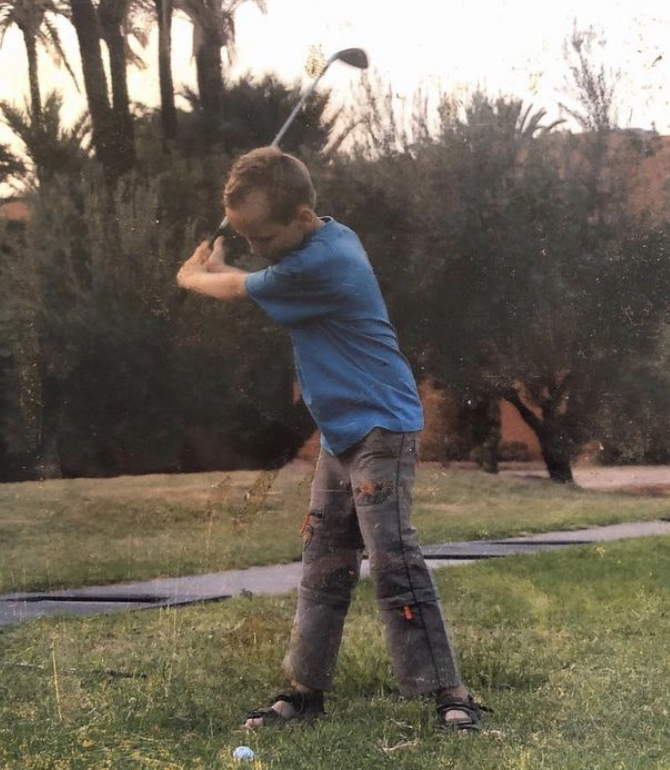

Charly est un jeune homme de 22 ans, né à Nantes et passionné de Golf depuis ses 8 ans. Charly a un niveau équivalent à Rory Mcllroy et Tiger Woods combiné, ainsi il est voué à régner sur le golf d'ici quelques années. Connu pour ses talents et sa modestie, Charly est un compétiteur hors pair et un enseignant passionnant et passionné.
Après l'obtention de son Bac, Charly a décidé de rejoindre l'université de Lettres de Nantes afin d'étudier la psychologie. Après 1 semestre effectué, Charly ne se retrouve pas dans le système pédagogique de la faculté, ainsi il décide d'arrêter et de partir travailler à Londres, Angleterre afin d'acquérir de l'expérience professionnelle et de parfaire son Anglais. Après 11 mois d'expérience à l'international, il décide de retourner sur Nantes afin de poursuivre ces études à la prestigieuse école d'Audencia, en bachelor english track. La suite appartient à l'histoire.
Débutant par une expérience de barman à Londres, Charly grimpa les échelons pour finir sa carrière dans la restauration Londonienne en tant que "Head-bartender", barman en chef. Lors de ses nombreux stages à Audencia, Charly a pu découvrir le milieu du recrutement chez Kolibri Consulting à Nantes, de la gestion d'entreprise et de l'importation chez French Wine Unlimited à Dublin, de la création et gestion d'une cellule commerciale chez Pixel Robotics à Paris. Charly est également professeur particulier d'Anglais depuis 3 ans. En ce jour, Charly a comme projet d'évoluer dans le milieu de la Supply Chain en étudiant à L'Institut Supérieur de Logistique Industrielle en Master, sur Bordeaux.
Voyage — Golf 🌍
Exploits🏌️